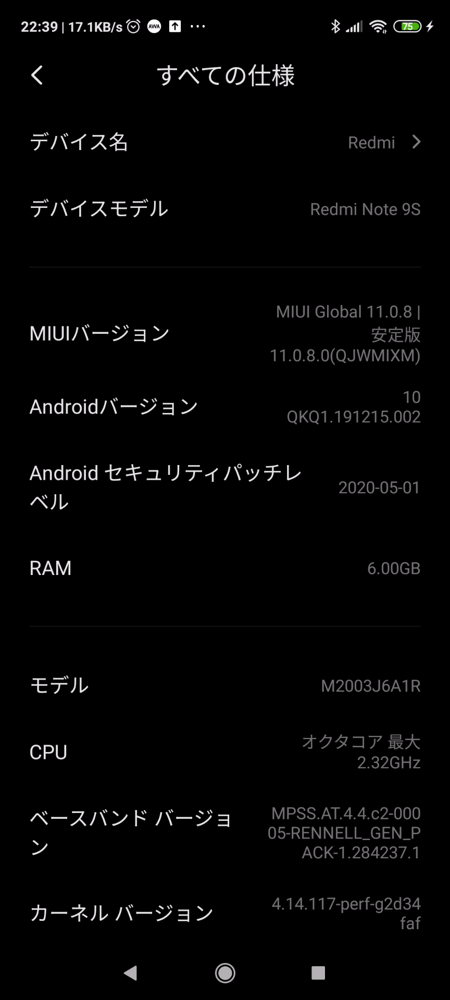
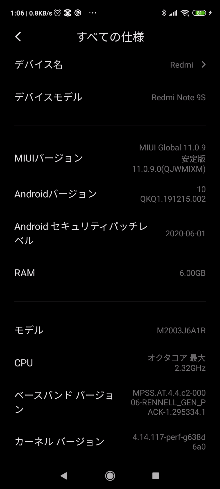

いやー、もう８月も終わりに近づてきましたね〜！
皆さんはどっか行きましたか？ 自分はお盆休みもバイクをモリワキカラーに塗っていましたよ。どこにも行ってないので、そろそろプチ旅行したいです。バイクに乗りたいですね。
さて、今回はOCNモバイルONEの乗り換えキャンペーンで激安7500円で新品本体をゲットしましたRedmi Note 9S にUnixBechを走らせてみたいと思います。
AndroidスマホなのにLinux上で走るUnixBenchをどうやって動かすってことですが、これは、TermuxというAndroidターミナルエミュレーター＋Linux環境構築アプリがあります。この環境で、UnixBenchをビルドしてスコアを計測してみました。antutuは２８万くらいらしいのですが、UnixBenchはどのくらい出るでしょうか。ちなみに、UmidigiF2は、前回
シングルCPU・・・スコア406.2
8CPU・・・・・・スコア1312.3
のスコアが出ました。
まだシステムのアップデートする前なんで、少しkernelバージョンは変わるかもしれませんが、計測時のスマホの状態を貼っておきます。Redmi Note 9Sは、CPUがUmidigiF2よりも速いので、1500くらいのスコアが出るかもなーと思っていますが、さてどのくらいになるでしょうか？

まぁ、前置きが長かったのですが、やってることは大したことはないです。まずはGoogleStoreから、以下のアプリを入れておきます。これなんて読むんですかね？ たーむゆーえっくす とか、たーむっくす とかかな？
openssh を入れてリモートから作業します。スマホ画面では、最低限以下を入れて起動しておきます。
pkg install openssh -y && sshd
WiFi アドレスを確認しておきます。
ip a | more
または、
ip a | grep inet | grep wlan
もっとズバリIPだけ取り出したい場合は、
ip -4 a | grep inet | grep wlan0 | grep -oP ‘[0-9]+\.[0-9]+\.[0-9]+\.[0-9]+(?=\/)’
鍵作るなり、パスワード設定するなりしてリモートからログインします。今回は、passwd してパスワード認証でリモートログイン。
ssh 192.168.xxx.xxx -p 8022
デフォルトsshポートは、8022 です。では、UnixBenchのビルドに必要なツールを入れましょう。
pkg install vim wget clang make perl git pkg-config -y
あとは前回と同様、Makefileを少し修正して ./Run です。
git clone https://github.com/kdlucas/byte-unixbench
cd byte-unixbench/UnixBench
cp -p Makefile Makefile.org
vi Makefile
※以下部分を削除してね。（-march=native）
$ diff -u Makefile.org Makefile
--- Makefile.org 2020-08-28 23:39:45.550203419 +0900
+++ Makefile 2020-08-28 23:40:56.800203392 +0900
@@ -95,7 +95,7 @@
# - Supported : x86, x86_64, ARM, AARCH64, etc..
# - Not Supported: RISC-V, IBM Power, etc...
ifneq ($(ARCH),$(filter $(ARCH),ppc64 ppc64le))
- OPTON += -march=native -mtune=native
+ OPTON += -mtune=native
else
OPTON += -mcpu=native -mtune=native
endif./Run
::
金曜の夜は眠いです、、、寝そうになりましたがベンチマークが終わったので貼り付け。
CPU:Qualcomm Snapdragon 720G
Hardware : Qualcomm Technologies, Inc SM7125
========================================================================
BYTE UNIX Benchmarks (Version 5.1.3)
System: localhost: Android
OS: Android -- 4.14.117-perf-g2d34faf -- #1 SMP PREEMPT Wed May 13 01:02:15 CST 2020
Machine: aarch64 (unknown)
Language: en_US.utf8 (charmap=, collate=)
23:41:17 up 12:11, load average: 0.00, 0.00, 0.00; runlevel
------------------------------------------------------------------------
Benchmark Run: Fri Aug 28 2020 23:41:17 - 00:09:22
8 CPUs in system; running 1 parallel copy of tests
Dhrystone 2 using register variables 32061907.1 lps (10.0 s, 7 samples)
Double-Precision Whetstone 6143.9 MWIPS (10.0 s, 7 samples)
Execl Throughput 267.0 lps (29.9 s, 2 samples)
File Copy 1024 bufsize 2000 maxblocks 630326.5 KBps (30.0 s, 2 samples)
File Copy 256 bufsize 500 maxblocks 205587.3 KBps (30.0 s, 2 samples)
File Copy 4096 bufsize 8000 maxblocks 1214283.1 KBps (30.0 s, 2 samples)
Pipe Throughput 1227952.4 lps (10.0 s, 7 samples)
Pipe-based Context Switching 105358.2 lps (10.0 s, 7 samples)
Process Creation 594.4 lps (30.0 s, 2 samples)
Shell Scripts (1 concurrent) 1306.7 lpm (60.0 s, 2 samples)
Shell Scripts (8 concurrent) 311.0 lpm (60.1 s, 2 samples)
System Call Overhead 1131049.8 lps (10.0 s, 7 samples)
System Benchmarks Index Values BASELINE RESULT INDEX
Dhrystone 2 using register variables 116700.0 32061907.1 2747.4
Double-Precision Whetstone 55.0 6143.9 1117.1
Execl Throughput 43.0 267.0 62.1
File Copy 1024 bufsize 2000 maxblocks 3960.0 630326.5 1591.7
File Copy 256 bufsize 500 maxblocks 1655.0 205587.3 1242.2
File Copy 4096 bufsize 8000 maxblocks 5800.0 1214283.1 2093.6
Pipe Throughput 12440.0 1227952.4 987.1
Pipe-based Context Switching 4000.0 105358.2 263.4
Process Creation 126.0 594.4 47.2
Shell Scripts (1 concurrent) 42.4 1306.7 308.2
Shell Scripts (8 concurrent) 6.0 311.0 518.3
System Call Overhead 15000.0 1131049.8 754.0
========
System Benchmarks Index Score 569.6
------------------------------------------------------------------------
Benchmark Run: Sat Aug 29 2020 00:09:22 - 00:37:59
8 CPUs in system; running 8 parallel copies of tests
Dhrystone 2 using register variables 120620219.0 lps (10.0 s, 7 samples)
Double-Precision Whetstone 26336.2 MWIPS (9.5 s, 7 samples)
Execl Throughput 1110.7 lps (29.9 s, 2 samples)
File Copy 1024 bufsize 2000 maxblocks 588338.4 KBps (30.0 s, 2 samples)
File Copy 256 bufsize 500 maxblocks 181982.1 KBps (30.0 s, 2 samples)
File Copy 4096 bufsize 8000 maxblocks 1457866.0 KBps (30.0 s, 2 samples)
Pipe Throughput 4512922.8 lps (10.0 s, 7 samples)
Pipe-based Context Switching 160612.9 lps (10.0 s, 7 samples)
Process Creation 947.0 lps (30.1 s, 2 samples)
Shell Scripts (1 concurrent) 2990.6 lpm (60.1 s, 2 samples)
Shell Scripts (8 concurrent) 399.8 lpm (60.5 s, 2 samples)
System Call Overhead 3946715.9 lps (10.0 s, 7 samples)
System Benchmarks Index Values BASELINE RESULT INDEX
Dhrystone 2 using register variables 116700.0 120620219.0 10335.9
Double-Precision Whetstone 55.0 26336.2 4788.4
Execl Throughput 43.0 1110.7 258.3
File Copy 1024 bufsize 2000 maxblocks 3960.0 588338.4 1485.7
File Copy 256 bufsize 500 maxblocks 1655.0 181982.1 1099.6
File Copy 4096 bufsize 8000 maxblocks 5800.0 1457866.0 2513.6
Pipe Throughput 12440.0 4512922.8 3627.8
Pipe-based Context Switching 4000.0 160612.9 401.5
Process Creation 126.0 947.0 75.2
Shell Scripts (1 concurrent) 42.4 2990.6 705.3
Shell Scripts (8 concurrent) 6.0 399.8 666.3
System Call Overhead 15000.0 3946715.9 2631.1
========
System Benchmarks Index Score 1177.5シングル性能では、UmidigiF2より上ですが、マルチCPUは下ですね。
シングルCPU・・・スコア569.6
8CPU・・・・・・スコア1177.5
特に、プロセスのフォーク処理（Process Creation）とか、シェル関連とか、パイプ処理（Pipe-based Context Switching）が半分くらい遅いですね。なんでこんなに遅いのでしょうか？ システムバージョンアップして、また計測してみます。
再起動後の情報です。

Kernelの末尾の番号だけ微妙に変わっていますが、メジャー・マイナー・メンテナンスの番号は変わらずですね。4.14.117です。UmidigiF2は、4.14.141+で新しいですね。
結果が出たら貼り付けておきます。今日はもうねるー！ UmidigiF2 のCPU、MediaTek Helio P70もなかなか良いのかもね。
追記。翌日ベンチマークが終わっていたので貼り付けておきます。誤差の範囲でほぼ同じ結果でした。今回もやはり、プロセスのフォーク処理（Process Creation）とか、シェル関連とか、パイプ処理（Pipe-based Context Switching）がUmidigiF2と比べて半分くらい遅い結果となりました。何かKernelかOS設定で制限があるのかもですね。ファイルコピーなんかは倍くらいRedmeNote9sが速いですが。
CPUやストレージが速ければ全部のスコアが上がるというわけはないということですね。
シングルCPU・・・スコア571.9
8CPU・・・・・・スコア1127.1
ちなみに、UnixBenchのパイプ処理に使うバイナリのヘッダ情報も乗せておきます。ちゃんと64bitでビルドされていますね。Termux、なかなかいいんじゃないでしょうか。
$ readelf -h ./spawn
ELF Header:
Magic: 7f 45 4c 46 02 01 01 00 00 00 00 00 00 00 00 00
Class: ELF64
Data: 2’s complement, little endian
Version: 1 (current)
OS/ABI: UNIX – System V
ABI Version: 0
Type: DYN (Shared object file)
Machine: AArch64
Version: 0x1
Entry point address: 0x760
Start of program headers: 64 (bytes into file)
Start of section headers: 7184 (bytes into file)
Flags: 0x0
Size of this header: 64 (bytes)
Size of program headers: 56 (bytes)
Number of program headers: 8
Size of section headers: 64 (bytes)
Number of section headers: 24
Section header string table index: 23
ということで、次回はUmidigiF2にWordPressが動く環境を作ってテストしてみたいですね。
BYTE UNIX Benchmarks (Version 5.1.3)
System: localhost: Android
OS: Android -- 4.14.117-perf-g638d6a0 -- #1 SMP PREEMPT Fri Jun 19 01:24:32 CST 2020
Machine: aarch64 (unknown)
Language: en_US.utf8 (charmap=, collate=)
01:18:25 up 17 min, load average: 0.55, 1.10, 1.44; runlevel
------------------------------------------------------------------------
Benchmark Run: Sat Aug 29 2020 01:18:25 - 01:46:30
8 CPUs in system; running 1 parallel copy of tests
Dhrystone 2 using register variables 32007008.4 lps (10.0 s, 7 samples)
Double-Precision Whetstone 6140.3 MWIPS (10.0 s, 7 samples)
Execl Throughput 261.7 lps (29.9 s, 2 samples)
File Copy 1024 bufsize 2000 maxblocks 628988.7 KBps (30.0 s, 2 samples)
File Copy 256 bufsize 500 maxblocks 207751.6 KBps (30.0 s, 2 samples)
File Copy 4096 bufsize 8000 maxblocks 1478525.0 KBps (30.0 s, 2 samples)
Pipe Throughput 1164727.3 lps (10.0 s, 7 samples)
Pipe-based Context Switching 99925.0 lps (10.0 s, 7 samples)
Process Creation 587.5 lps (30.0 s, 2 samples)
Shell Scripts (1 concurrent) 1284.4 lpm (60.0 s, 2 samples)
Shell Scripts (8 concurrent) 312.1 lpm (60.2 s, 2 samples)
System Call Overhead 1127699.3 lps (10.0 s, 7 samples)
System Benchmarks Index Values BASELINE RESULT INDEX
Dhrystone 2 using register variables 116700.0 32007008.4 2742.7
Double-Precision Whetstone 55.0 6140.3 1116.4
Execl Throughput 43.0 261.7 60.9
File Copy 1024 bufsize 2000 maxblocks 3960.0 628988.7 1588.4
File Copy 256 bufsize 500 maxblocks 1655.0 207751.6 1255.3
File Copy 4096 bufsize 8000 maxblocks 5800.0 1478525.0 2549.2
Pipe Throughput 12440.0 1164727.3 936.3
Pipe-based Context Switching 4000.0 99925.0 249.8
Process Creation 126.0 587.5 46.6
Shell Scripts (1 concurrent) 42.4 1284.4 302.9
Shell Scripts (8 concurrent) 6.0 312.1 520.1
System Call Overhead 15000.0 1127699.3 751.8
========
System Benchmarks Index Score 571.9
------------------------------------------------------------------------
Benchmark Run: Sat Aug 29 2020 01:46:30 - 02:15:04
8 CPUs in system; running 8 parallel copies of tests
Dhrystone 2 using register variables 122466899.1 lps (10.0 s, 7 samples)
Double-Precision Whetstone 26082.3 MWIPS (9.9 s, 7 samples)
Execl Throughput 1100.0 lps (29.7 s, 2 samples)
File Copy 1024 bufsize 2000 maxblocks 509969.0 KBps (30.0 s, 2 samples)
File Copy 256 bufsize 500 maxblocks 147009.9 KBps (30.0 s, 2 samples)
File Copy 4096 bufsize 8000 maxblocks 1308075.6 KBps (30.0 s, 2 samples)
Pipe Throughput 4401030.7 lps (10.0 s, 7 samples)
Pipe-based Context Switching 163599.9 lps (10.0 s, 7 samples)
Process Creation 1059.8 lps (30.1 s, 2 samples)
Shell Scripts (1 concurrent) 2761.2 lpm (60.1 s, 2 samples)
Shell Scripts (8 concurrent) 366.4 lpm (60.8 s, 2 samples)
System Call Overhead 3964160.3 lps (10.0 s, 7 samples)
System Benchmarks Index Values BASELINE RESULT INDEX
Dhrystone 2 using register variables 116700.0 122466899.1 10494.2
Double-Precision Whetstone 55.0 26082.3 4742.2
Execl Throughput 43.0 1100.0 255.8
File Copy 1024 bufsize 2000 maxblocks 3960.0 509969.0 1287.8
File Copy 256 bufsize 500 maxblocks 1655.0 147009.9 888.3
File Copy 4096 bufsize 8000 maxblocks 5800.0 1308075.6 2255.3
Pipe Throughput 12440.0 4401030.7 3537.8
Pipe-based Context Switching 4000.0 163599.9 409.0
Process Creation 126.0 1059.8 84.1
Shell Scripts (1 concurrent) 42.4 2761.2 651.2
Shell Scripts (8 concurrent) 6.0 366.4 610.7
System Call Overhead 15000.0 3964160.3 2642.8
========
System Benchmarks Index Score 1127.1